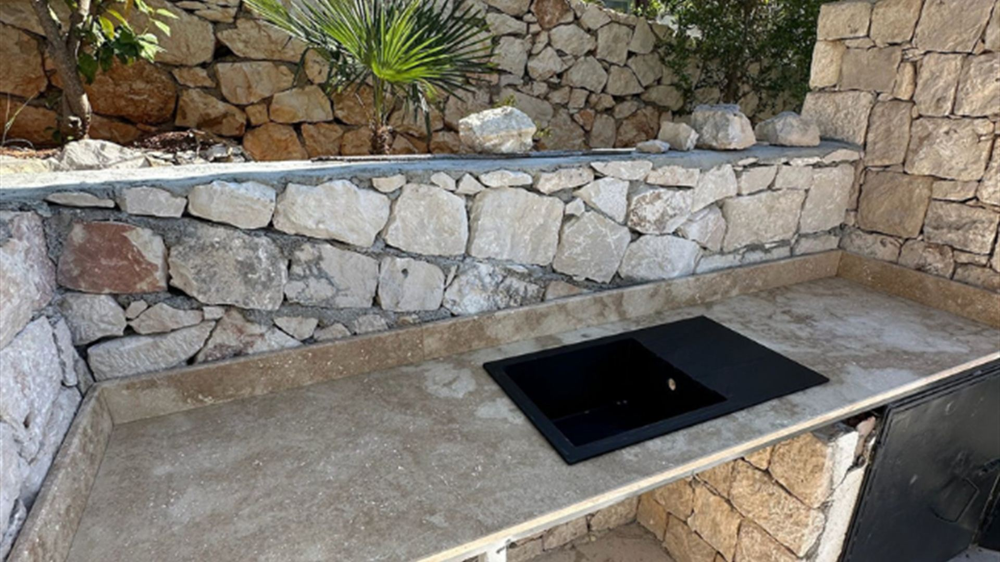

Muratpaşa atölyesinden Aksu bölgesine ölçü ve teslimat.
Aksu mermer tezgah işini Antalya Modern Mermer, Muratpaşa atölyesinden yönetir. Ücretsiz keşif, ölçü, kesim ve montaj Aksu başta olmak üzere Antalya genelinde yapılır. Telefon: 0533 317 11 46.
Yerel hizmet
Aksu–Kundu hattında konut ve turizm tesisi işi iç içedir. Granit ve kuvars otel mutfağında, mermer evde konuşulur.
Hizmet mahalleleri: Kundu, Çalkaya, Pınarlı, Kemerağzı. Mermer, granit, çimstone, porselen ve mezar işi bu ilçe için de geçerlidir.
Hayır. Aksu ve çevre mahallelerde ücretsiz keşif verilir.
WhatsApp’a ilçe, mahalle ve mutfak fotoğrafı gönderin. Aynı gün dönüş yapılır.
Keşif
WhatsApp veya telefon. İlçe ve mutfak fotoğrafı yeterli.